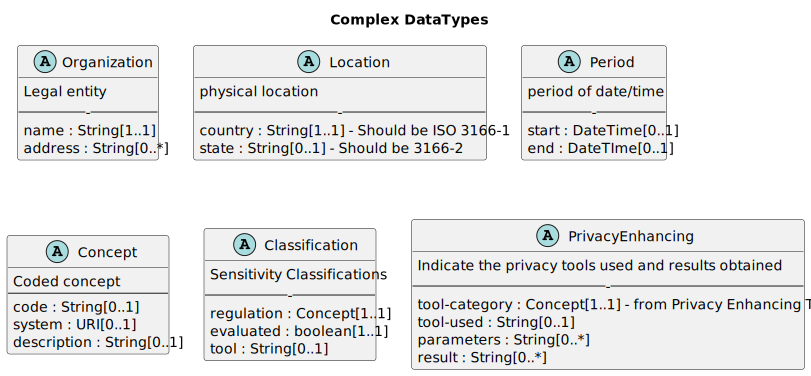

The Data Provenance Standard
The Data Provenance Standard defines metadata about a data set, so
that the data set provenance and lineage are understood. This set of
metadata are necessary to enable proper dataset selection for AI Model
Training.
Version 1.1.0
Published
Draft
Authors:
Comments inquiries@dataandtrustalliance.org
License Creative Commons
Attribution-ShareAlike 4.0 International
1. Abstract
Data transparency is critical. Trust in the insights and decisions
coming from both traditional data and AI applications depends on
understanding the origin, lineage, and rights associated with the data
that feeds them. Lack of transparency has real costs, including
unnecessary risks and foregone opportunities. And yet, many
organizations today cannot answer basic data questions without
considerable difficulty and investment.
To realize the value of data and AI requires a reliable
cross-industry baseline of data transparency. The Data Provenance
Standard proposes a solution.
Table of Content
- Abstract
- Introduction
- Use-Cases
- Abstract Specification
- Technical Encoding
- Security
Considerations
- Annex
- Acknowledgements
2. Introduction
For the past quarter century, companies have worked to become
"digital". Now they are using data, algorithms, and AI to reinvent how
decisions are made. These companies are becoming "data enterprises".
This transition is transforming industry sectors from retail, education,
and entertainment to health and wellness, transportation, and
energy.
For these intelligent systems to create economic and societal value
for all stakeholders—customers, employees, citizens, shareholders,
partners, suppliers, and more—they must be designed and managed
responsibly.
The Data Provenance Standard surface metadata on source, legal
rights, privacy & protection, generation date, data type, generation
method, intended use, restrictions, and lineage. Each metadata field has
associated values. This essential information about the origin of and
rights associated with data allows enterprises to make informed choices
about the data they source and use. The result can be improvements in
operational efficiency, regulatory compliance, collaboration, and value
generation.
2.1 The Data & Trust
Alliance
The Data & Trust Alliance brings together leading businesses and
institutions across multiple industries to learn, develop, and adopt
responsible data and AI practices. Established in September 2020, it was
founded as a not-for-profit consortium and is co-chaired by Ken
Chenault, General Catalyst chairman and managing director, and former
American Express chairman and CEO; and Sam Palmisano, former IBM
chairman and CEO. Jon Iwata, founding executive director, works with our
Leadership Council, a cross-functional team of senior executives
selected by their CEOs to identify and drive Alliance projects.
This specification adopts the normative words defined in IETF Best Current Practice
14: Key words for use in RFCs to Indicate Requirement Levels
(BCP-14), certain words indicate whether a specific content is
normative. The key words "MUST", "MUST NOT", "REQUIRED", "SHALL", "SHALL
NOT", "SHOULD", "SHOULD NOT", "RECOMMENDED", "MAY", and "OPTIONAL" in
this document are to be interpreted as described. Informative content
does not contain these key words.
2.3 Maintenance of the
specification
The D&TA Data Provenance Standard Working Group is responsible
for the ongoing monitoring and periodic review of the terms in the
registry. This includes:
- Annual review of all terms to ensure continued relevance
- Soliciting feedback from the community on the usage and
applicability of terms
- Making revisions to definitions as needed
- Retiring terms that are no longer relevant or have become
obsolete
Management of D&TA’s Data Provenance Standard vocabulary registry
is a collaborative and dynamic process. We welcome feedback from the
broader community to ensure that the vocabulary remains a valuable and
accurate resource for all.
2.4 Glossary
The following concepts are used throughout the specification
- AI: Computer systems that can perform tasks
typically requiring human intelligence, such as understanding language,
recognizing patterns, and making decisions.
- Dataset: A collection of data.
- Metadata: Structured description about a dataset
that enable the understanding of that dataset.
- Dataset Identifier: A unique label identifying the
provenance metadata of the current dataset
- Lineage: Identifiers or pointers of metadata
representing the data which comprise the current dataset
- Source: Identifies the origin (person,
organization, system, device, etc.) of the current dataset
- Legal Rights: Identifies the lawful entitlements
and protections over data ownership, use, and distribution, ensuring
compliance, privacy, and accountability
- Privacy and Protection: Identifies any types of
sensitive data associated with the current dataset and any privacy
enhancing techniques applied
- Generation Date: Timestamp marking the creation of
the current dataset
- Data Type: Identifies the data type contained in
the current set, and provides insights into how the data is organized,
its potential use cases, and the challenges associated with handling and
using it
- Generation Method: Identifies how the data was
produced (data mining, machine-generated, IoT sensors, etc.)
- Intended Use and Restrictions: Identifies the
intended use of the data and which downstream audiences should not be
allowed access to the current dataset
3. Use-Case
The following use-cases are examplar of the use-cases for which this
standard applies. These use-cases show how this standard supports
diverse needs across the data ecosystem.
- Healthcare insurance data procurement
- Media consumption pattern data set for consumer behavior
insights
- Financial services customer product enablement
- Enhancing global logistics efficiency through AI-driven tariff
harmonization
3.1
Use-Case 1: Healthcare insurance data procurement
Bella and her team are evaluating a new dataset that contains
comprehensive patient and insurance payment information. This dataset is
considered crucial for enhancing the company’s predictive analytics
models which forecast healthcare trends, personalize insurance plans,
and optimize claim processing.
Goals
- Establish lineage and align with data provenance insights.
- Comply with healthcare regulations, focusing on confidentiality,
consent, and appropriate data handling.
- Enhance operational efficiency and analytical models without major
disruptions.
- Leverage the dataset for developing innovative strategies and
improving customer trust by analyzing the dataset’s intent and
proprietary content for new personalized engagement opportunities.
Challenges
- Balancing the need for detailed, comprehensive data with privacy and
confidentiality requirements.
- Ensuring the dataset’s metadata is accurate, up-to-date, and
compliant with evolving Data Provenance Standard.
- Integrating new datasets with existing systems and models without
compromising data integrity or system performance.
- Navigating the complex landscape of healthcare regulations and
ensuring all data usage is compliant.
3.1.1 Use-Case 1 needs
- Has the data already been incorporated?
- Who has generated the data? Are they a trusted supplier?
- Where was the data captured from?
- When was the data captured, and how often is it updated?
- How was the data captured?
- What format is the dataset?
- Were privacy enhancing technologies (PETs) or tools applied to the
dataset in order to remove, mask, or modify PI/SPI in the data?
- What kind of privacy classes of data are in the dataset?
- Are there appropriate consents covering the dataset?
- Are there geographical restrictions on processing or storage?
- What license, copyright, trademark, or patent requirements?
- What are the allowances or restrictions on the kinds of use (e.g. AI
training)?
3.1.2 Outcome
Through comprehensive metadata evaluation, the procurement team was
able to perform a more in-depth assessment of a crucial dataset. The
results were decreasing procurement time and risk while enhancing the
company’s predictive analytics capabilities and maintaining adherence to
legal and ethical standards. The benefits of having access to the
dataset metadata include:
- Better dataset evaluation.
- Title, unique identifier, and details about data origin and
collection methods allowed for quick insights into the dataset’s
provenance without having to read through many pages of descriptive
text.
- Confidentiality, consent documentation, data processing, and storage
geographies provided evidence of the dataset’s compliance with
healthcare regulations.
- Clarity from the metadata enabled coordination and discussions
between the procurement and data teams to assess the dataset’s impact on
analytical models, ensuring seamless integration and operational
improvement.
- Increased risk and opportunity balance.
- Metadata around generation method and permitted use proved critical
to the organization’s innovative marketing strategies and improving
internal customer trust of the acquired data.
- Collaboration between the legal and compliance departments was
boosted because it was clear at the onset who needed to be involved in
which aspects of dataset acquisition evaluation, ensuring the dataset’s
use was in strict adherence to healthcare regulations and company
policies.
- Improved data procurement and legal validation.
- Suspect data processing and storage metadata resulted in increased
legal scrutiny in advance of data acquisition, leading to the correction
of inaccuracies in the metadata.
- The metadata evaluation process, despite causing a brief delay,
ultimately safeguarded the organization against potential legal and
operational risks, ensuring the dataset’s strategic and compliant
use.
Curating a high-quality dataset that tracks media consumption habits
across diverse platforms for content personalization.
Jordan’s current project involves curating a dataset that tracks
media consumption habits across diverse platforms. This dataset aims to
empower media buyers and sellers in accurately targeting their audience
segments, facilitating personalized content strategies for industries
ranging from consumer goods to tourism.
Goals
- Ensure comprehensive coverage of media consumption patterns to
provide actionable insights for diverse industries.
- Maintain high standards of data transparency to build trust and
encourage collaboration.
- Enhance clients’ operational efficiency and compliance through
strategic data integration.
Challenges
- Balancing data comprehensiveness with privacy and ethical
considerations.
- Keeping pace with rapid changes in media consumption behaviors and
technology.
- Ensuring data standards provide necessary transparency to data
buyers and that the metadata is compatible with automated data
procurement systems.
3.2.1 Use-Case 2 needs
In addition to some needs outlined in Use-Case 1:
- Traceability to all data sources
- Applicability of the dataset to the use-case
- Dataset covers the geography of interest
- Dataset has covered full timeframe of interest
- Are there restrictions on the use?
- Can the data be used for AI, educational, and developmental
programs?
3.2.2 Outcome
Metadata associated with the "March 2024 Global Media Consumption
Trends" dataset is a vital resource for procuring complex media
consumption patterns, ensuring its integrity and applicability in AI
analytics. This approach to describing data can facilitate effective
personalization of content strategies across various industries and will
set a new standard for transparent, efficient, and compliant data usage
in media consumption analysis. The outcome includes:
- Comprehensive coverage and actionable insights
- Detailed data origin geography and collection methodologies will
assure users of the data’s relevance and quality, thus facilitating
targeted content strategies.
- Transparency and trust building
- By adhering to the Data Provenance Standard and providing a clear
metadata URL, the dataset’s transparency is increased, making it easier
for media buyers and sellers to assess its credibility.
- The documentation of dataset lineage and the use of PETs-like
anonymization underscores the commitment to data privacy and security,
building trust among clients.
- Increased efficiency and enhanced compliance
- The dataset’s lack of proprietary data restrictions and the
provision of a clear license to use, as indicated by contacting
AnalytiQuest Ventures’ Office of General Counsel, streamlines the data
acquisition process, enhancing clients’ operational efficiency.
- Data processing and storage geography metadata will help downstream
consumers comply with legal standards and privacy regulations, thereby
reducing legal and reputational risks.
3.3
Use-Case 3: Financial services customer product enablement
Evaluating a new dataset for refining AI algorithms used in customer
credit card offerings.
Minh is tasked with evaluating a new dataset for refining AI
algorithms for customer credit card offerings. The dataset under
consideration has been documented in accordance with the Data Provenance
Standard, ensuring transparency and compliance, especially under GDPR
and the new EU AI Act. Minh’s evaluation process focuses on the detailed
metadata provided for the dataset.
Goals
- Enhance AI model accuracy for customized credit card offerings.
- Ensure compliance with international laws like GDPR to mitigate
legal risks.
- Optimize data handling practices within geographical limits for
increased efficiency.
- Maintain thorough documentation for dataset transparency and
accountability.
- Uphold dataset quality and integrity to bolster trust in AI
insights.
Challenges
- Ensure dataset credibility through clear documentation of its
lineage and metadata.
- Navigate diverse international regulations related to data privacy
and AI.
- Integrate the new dataset with existing systems without operational
disruptions.
- Balance proprietary data use with information protection and
competitive edge.
- Confirm dataset use is ethical and consensual, particularly with
sensitive data.
- Keep pace with technological and data standard advancements for AI
relevance.
3.3.1 Use-Case 3 needs
In addition to some needs outlined in Use-Case 1 and 2:
- Has the dataset been anonymized compliant to privacy
regulations?
- Are there any publication restrictions or limits?
3.3.2 Outcome
Minh’s evaluation of the "Consumer Spending Patterns 2020-2024"
dataset through the lens of the Data Provenance Standard significantly
enhanced ProForma Financial Services’ AI algorithms for customer credit
card offerings, ensuring both heightened personalization and strict
adherence to international data regulations. This approach improved the
precision and effectiveness of the company’s AI models and ensured
compliance, data privacy, and seamless integration with existing
systems, paving the way for responsible and innovative use of AI
insights in the financial sector. The outcome includes:
- Better business case alignment
- By not relying solely on high-level dataset descriptions, this
process elevated the focus on standards and metadata for business case
alignment and ultimate success.
- The provided origin, creation dates, and collection method of the
metadata assured that the dataset relevance and potential quality were
acceptable.
- Faster data acquisition timeline and speed to market
- The absence of proprietary data restrictions and clear licensing
terms sped up ProForma’s data acquisition process and ability to develop
AI capabilities.
- Increased compliance and integrity
- The ability to assess dataset compliance with the latest Data
Provenance Standard, including versioning and unique identifiers meant
that the initial assessment of fit-for-use could be performed by an
automated system and passed to a human for deeper review.
- The dataset lineage, original sources, and PETs allowed ProForma to
quickly gauge the level of pre-processing necessary to comply with data
privacy requirements.
- The data collection, processing and storage information further
helped meet data privacy requirements and mitigate legal and
reputational risks associated with GDPR and the EU AI Act.
3.4
Use-Case 4: Enhancing global logistics efficiency through AI-driven
tariff harmonization
Managing data to refine AI systems for accurately predicting tariff
costs across countries and categories.
The global nature of Navisphere Logistics, Ltd.’s operations means
that the company must navigate a complex web of international tariffs
and customs regulations. Efficiently managing these tariffs is critical
to minimizing delivery times and costs. Dr. Hicks and her team are
tasked with refining the company’s AI systems to accurately predict
tariff costs across different countries and product categories.
Goals
- Unify global tariff schedules into an AI-compatible format for
better predictions.
- Enhance AI tariff models to reduce cross-border delivery times and
costs.
- Adhere to Data Provenance Standard for tariff data integrity and
compliance.
- Attain tariff predictions globally across various product categories
with advanced AI.
- Simplify customs processes with accurate tariff assessments, aiding
global clients.
Challenges
- Navigate the intricate international tariff and customs landscape
with diverse rules.
- Rigorously assess dataset metadata for compliance with global
standards and privacy.
- Continually update AI models to adapt to changing international
tariff regulations.
- Balance advanced AI development with responsible usage and adherence
to privacy laws.
- Ensure smooth AI model integration into Navisphere Logistics’
systems without workflow disruption.
3.4.1 Use-Case 4 needs
In addition to some needs outlined in Use-Case 1, 2, and 3:
- Indications of data credibility or bias.
- Indications that the data are original vs intermediary combined from
multiple sources
3.4.2 Outcome
Through application of the Data Provenance Standard metadata for its
global tariff schedule datasets, Navisphere Logistics, Ltd., has
achieved a significant enhancement in the operational efficiency and
accuracy of its AI-driven tariff prediction models. The outcome
includes:
- Improved data consistency and compatibility
- By specifying the version used for the metadata, Navisphere ensured
that all datasets adhered to a uniform standard, facilitating seamless
integration and interpretation by the AI models, regardless of the
data’s origin or when it was collected.
- Enhanced data identification and access
- The establishment of a unique metadata identifier and a metadata
unique URL for each dataset enabled easy identification, access, and
reference; streamlining the data ingestion process for the AI systems;
and reduced the time spent on data preprocessing.
- Streamlined lineage and dependency tracking
- The metadata location for datasets feeding the current dataset
allowed Navisphere to efficiently manage data dependencies and lineage,
ensuring that updates or corrections in source datasets could be rapidly
propagated through the system, maintaining the accuracy and timeliness
of tariff predictions.
- Increased accountability and data integrity
- Detailed metadata entries for the creator, source, and data origin
geography provided clear accountability and context for the data,
enhancing trust in the data’s reliability and compliance with regional
laws and international regulations.
- Better data privacy and security measures
- The application of privacy enhancing technologies (PETs) and the
careful classification of data confidentiality ensured that personally
identifiable information (PII) and sensitive personal information (SPI)
were adequately protected, aligning with global privacy standards and
ethical considerations in AI application.
- Legal compliance
- Detailed metadata on data processing and storage geographies,
consent locations, and the license to use the data ensured that all AI
operations remained within legal boundaries, respecting data sovereignty
laws and consent agreements.
4. Abstract Specification
The Data Provenance Standard is made up of three groups of metadata
elements: Source, Provenance, and Use.

4.1 Source
This group describes the dataset and the source of the dataset.
- Element-Name:
source
- cardinality: 1..1
- The following are child elements
4.1.1 Standards version used
Specifies the version of the schema or standards used to define the
metadata for this dataset, ensuring consistency and compatibility over
time.
- Element-Name:
version
- cardinality: 1..1
- Format: String, Prefer Semantic Versioning (a.k.a., SemVer) format -
https://semver.org/
- Example:
1.1.0
4.1.2 Dataset title / name
The official name of the dataset, which should be descriptive and
help easily identify the dataset's content and purpose.
- Element-Name:
title
- cardinality: 1..1
- Format: String
- Example:
Blue sky observations
A distinct identifier (such as a UUID) assigned to the dataset's
metadata to uniquely distinguish it from others, ensuring no confusion
or overlap.
- Element-Name:
id
- cardinality: 1..1
- Format: URI
- Example:
urn:uuid:17725bad-9098-4f43-abe6-43490ae1596c
The web address where the dataset's metadata is published and can be
accessed, providing a direct link to detailed information about the
dataset. Typically will be a unique URL of the current dataset
- Element-Name:
location
- cardinality: 0..1
- Format: URL
- Example:
https://example.org
4.1.5 Dataset issuer
The legal entity responsible for creating the dataset, providing
accountability and a point of contact for inquiries.
- Element-Name:
issuer
- cardinality: 1..*
- Format: Organization
4.1.6 Description of the
dataset
Contains a detailed narrative that explains the contents, scope, and
purpose of the dataset. It provides essential contextual information
that helps users understand what the data represents, how it was
collected, and any limitations or recommended uses.
- Element-Name:
description
- cardinality: 1..1
- Format: Markdown
4.2 Provenance
This group describes the provenance of the dataset
- Element-Name:
provenance
- cardinality: 1..1
- The following are child elements
Identifies where the metadata for any source datasets that contribute
to the current dataset can be found, establishing lineage and
dependencies. This field establishes lineage.
- Element-Name:
source
- cardinality: 0..1
- Format: URL
- Example:
https://example.org/dataset/blue.xml
4.2.2 Source for dataset
If the data originates from a different organization than the one who
issued the dataset, this field identifies the original source's legal
name.
4.2.3 Data origin geography
The geographical location where the data was originally collected,
which can be important for compliance with regional laws and
understanding the data's context.
- Element-Name:
origin-geography
- cardinality: 1..*
- Format: Location
4.2.4 Dataset issue date
The date when the dataset was compiled or created, providing a
temporal context for the data.
- Element-Name:
date
- cardinality: 1..1
- Format: DateTime
- Example:
2024-05-27, or
2024-05-27T15:18:02Z
4.2.5 Date
of previously issued version of the dataset
The release date of the last version of the dataset, if it has been
updated or revised, to track changes and updates over time.
- Element-Name:
previous-date
- cardinality: 0..1
- Format: DateTime
- Example:
2024-05-27, or
2024-05-27T15:18:02Z
4.2.6 Range of dates for
data generation
The span of time during which the data within the dataset was
collected or generated, offering insight into the dataset's timeliness
and relevance.
- Element-Name:
generation-period
- cardinality: 0..1
- Format: Period
4.2.7 Method
The methodology or procedures used to collect, generate, or compile
the data, giving insight into its reliability and validity.
- Element-Name:
generation-method
- cardinality: 1..*
- Format: Concept
- MAY be other code from other code systems
Describes the nature of the data within the dataset, such as
numerical, textual, or multimedia, helping users understand what kind of
information is contained within the file or dataset.,
- Element-Name:
format
- cardinality: 0..*
- Format: String
- Example:
application/json
4.3 Use
This group describes legal, use, and restrictions.
- Element-Name:
use
- cardinality: 1..1
- The following are child elements
4.3.1 Confidentiality
classification
Indicate if the dataset includes data falling into the
confidentiality classification. Each classifier must be evaluated as
true/false/unknown.
4.3.2 Consent documentation
location
Specifies where consent documentation or agreements related to the
data can be found, ensuring legal compliance and regulatory use. This
element must be populated when Privacy Consent is appropriate. When
populated it points to either one Privacy Consent Policy that all
individuals in the dataset agreed to, or one Privacy Policy for each
individual in the dataset with that individual's signature.
- Element-Name:
consents
- cardinality: 0..*
- Format: URL
- Example:
https://example.org/dataset/34/consent.pdf
4.3.3 Privacy indicators
Indicates whether techniques were used to protect personally
identifiable information (PII) or sensitive personal information (SPI),
highlighting the dataset's privacy considerations.
4.3.4 Data processing
geography included
Defines the geographical boundaries within which the data can be
processed, often for legal or regulatory reasons.
- Element-Name:
processing-included
- cardinality: 0..*
- Format: Location
- When not populated there are no processing location
requirements
4.3.5 Data processing
geography excluded
Defines the geographical boundaries within which the data cannot be
processed, often for legal or regulatory reasons.
- Element-Name:
processing-excluded
- cardinality: 0..*
- Format: Location
- When not populated there are no processing location
restrictions
4.3.6 Data storage geography
allowed
Specifies where the data may be stored, crucial for compliance with
data sovereignty laws.
- Element-Name:
storage-allowed
- cardinality: 0..*
- Format: Location
- When not populated there are no defined storage location
requirements
4.3.7 Data storage
geography forbidden
Specifies where the data may not be stored, crucial for compliance
with data sovereignty laws.
- Element-Name:
storage-forbidden
- cardinality: 0..*
- Format: Location
- When not populated there are no defined storage location
restrictions
4.3.8 License to use
Details the location or point of contact for identifying the terms
under which the dataset can be used, including any restrictions or
obligations, clarifying legal use and distribution rights. License may
be an End User License Agreement (EULA), subject to Data Use Agreement
(DUA).
- Element-Name:
license
- cardinality: 0..1
- Format: String
- Prefer License codes such as CreativeCommons or Apache
- May be a URL
- Example:
Apache-2.0
4.3.9 Intended data use
Describes the purpose for which the dataset was created, guiding
users on its intended use and potential applications against identified
use cases. List all that apply from the Data Use codes that apply. Additional
codes can be included with descriptions.
- Element-Name:
intended-purpose
- cardinality: 0..*
- Format: Concept
- SHALL populate
code from Data Use.
- SHALL populate
description with specific
description
- When using the code
non-ai-other and
ai-other, the description SHALL describe the actual
use
4.3.10 Copyright
Indicates whether the dataset contains proprietary information that
is covered with a Copyright and the terms of said Copyright.
- Element-Name:
copyright
- cardinality: 0..*
- Format: String
- where the string
no indicates no Copyright
4.3.11 Patent
Indicates whether the dataset contains proprietary information that
is covered with a Patent and said Patent number.
- Element-Name:
patent
- cardinality: 0..*
- Format: String
- where the string
no indicates no Patent
4.3.12 Trademark
Indicates whether the dataset contains proprietary information that
is covered with a Trademark, and the terms of said Trademark.
- Element-Name:
trademark
- cardinality: 0..*
- Format: String
- where the string
no indicates no Trademark
4.4 Primitive Datatypes
These datatypes are commonly understood.
- String - A sequence of Unicode characters
- URI - A Uniform Resource Identifier Reference RFC 3986. Note: URIs
are case sensitive. For UUID
(urn:uuid:53fefa32-fcbb-4ff8-8a92-55ee120877b7) use all lowercase
- URL - A Uniform Resource Locator RFC 1738. Note
URLs are accessed directly using the specified protocol. Common URL
protocols are http{s}:, ftp:, mailto: and mllp:, though many others are
defined
- Markdown - A String that can include markdown. This
specification requires and uses the GFM (Github Flavored Markdown)
extensions on CommonMark
format, with the exception of support for inline HTML which is not
supported.
- dateTime A date, date-time or partial date (e.g.
just year or year + month) as used in human communication. The format is
a subset of ISO8601
icon: YYYY, YYYY-MM, YYYY-MM-DD or YYYY-MM-DDThh:mm:ss+zz:zz, e.g. 2018,
1973-06, 1905-08-23, 2015-02-07T13:28:17-05:00 or
2017-01-01T00:00:00.000Z. If hours and minutes are specified, a timezone
offset SHALL be populated. Actual timezone codes can be sent using the
Timezone Code extension, if desired. Seconds must be provided due to
schema type constraints but may be zero-filled and may be ignored at
receiver discretion. Milliseconds are optionally allowed. Dates SHALL be
valid dates. The time "24:00" is not allowed. Leap Seconds are
allowed
4.5 Complex Datatypes
These are made up of more than one child element as described.

4.5.1 Organization
- Legal Entity Name
- Element-Name:
name
- cardinality: 1..1
- Format: String
- Legal entity Address
- Element-Name:
address
- cardinality: 0..*
- Format: String
4.5.2 Location
- Country
- Element-Name:
country
- cardinality: 1..1
- Format: String
- SHOULD be ISO 3166 2 letter, 3 letter code, or 3 digit country
codes
- State or Provenance
- Element-Name:
state
- cardinality: 0..1
- Format: String
- SHOULD be ISO 3166-2: Codes for the names of the principal
subdivisions (e.g., states or provinces) of all countries coded in ISO
3166-1.
4.5.3 Period
- Start date/time
- Element-Name:
start
- cardinality: 0..1
- Format: DateTime
- if empty, there is no start
- End date/time
- Element-Name:
end
- cardinality: 0..1
- Format: DateTime
- if empty, there is no end
4.5.4 Concept
- specific code for computable
- Element-Name:
code
- cardinality: 0..1
- Format: String
- Should be from a given vocabulary
- SHOULD be compute friendly, without spaces
- source of code
- Element-Name:
system
- cardinality: 0..1
- Format: URI
- description of code for human
- Element-Name:
description
- cardinality: 0..1
- Format: String
4.5.5 Classification
- specific global regulation domain
- Element-Name:
regulation
- cardinality: 1..1
- Format: Concept
- Has the dataset been evaluated to the regulation domain?
- Element-Name:
evaluated
- cardinality: 1..1
- Format: Boolean
4.5.6 PrivacyIndicator
- specific global regulation domain
- Element-Name:
tool
- cardinality: 1..1
- Format: Concept
- Parameters used with the tool
- Element-Name:
parameters
- cardinality: 0..1
- Format: String
- Results of the tool use
- Element-Name:
result
- cardinality: 0..1
- Format: String
5. Technical Encoding
The detailed schema specification for JSON, XML, and YAML are
published independently in GIThub repositories. In these repositories
the following are to be found:
- schema - technical encoding of the rules
- required vocabulary in that encoding format
- examples
The technical coding and examples are available in GIThub for the JSON
metadata encoding
The technical coding and examples are available in GIThub for the XML
metadata encoding
The technical coding and examples are available in GIThub for the YAML
metadata encoding
6. Security considerations
TODO: This section should advise the reader on security or privacy
things they should be aware of and for which a user of this
specification will need to consider. Often it is just a listing of risks
that the specification does not address, but for which the specification
creates. Such as the fact that datasets and metadata are sensitive data
and would need to be protected or carefully crafted such that they are
not a risk.
Metadata and the Dataset are data that need to be of quality and
trustable to be valuable.... blah blah
7. Annex
The Annex contains normative vocabulary to be used when it applies.
This vocabulary SHALL be used when they apply.
7.1 Data Collection Method
Codes
The following defined vocabulary are to be used for the "Method".
- source URI:
https://dataandtrustalliance.org/DPS/CodeSystem/Method
| web-scraping-crawling-textual |
Web scraping/Crawling Textual |
| web-scraping-crawling-structured |
Web scraping/Crawling Structured |
| web-scraping-crawling-metadata |
Web scraping/Crawling Metadata |
| web-scraping-crawling-social-media |
Web scraping/Crawling Social media |
| web-scraping-crawling-news-articles |
Web scraping/Crawling News & articles |
| web-scraping-crawling-other |
Web scraping/Crawling Other |
| feeds-rss-source |
Feeds RSS source |
| feeds-api-source |
Feeds API source |
| feeds-real-time-database-info |
Feeds Real time database info |
| feeds-interval-timed-database-info |
Feeds Interval timed database info |
| feeds-file-feed-info |
Feeds File feed info |
| feeds-other |
Feeds Other |
| syndication-news-feeds |
Syndication News feeds |
| syndication-financial-feeds |
Syndication Financial feeds |
| syndication-social-media |
Syndication Social media |
| syndication-product-service-catalog |
Syndication Product/service catalog |
| syndication-other |
Syndication Other |
| data-mining-association-rule |
Data mining Association rule |
| data-mining-classification |
Data mining Classification |
| data-mining-clustering |
Data mining Clustering |
| data-mining-regression |
Data mining Regression |
| data-mining-anomaly-detection |
Data mining Anomaly detection |
| data-mining-sequencing |
Data mining Sequencing |
| data-mining-other |
Data mining Other |
| machine-generated-mlops-synthetic |
Machine generated/MLOps Synthetic |
| machine-generated-mlops-generative |
Machine generated/MLOps Generative |
| machine-generated-mlops-twin |
Machine generated/MLOps Twin |
| machine-generated-mlops-machine-2-machine |
Machine generated/MLOps Machine-2-machine (M2M) |
| machine-generated-mlops-ai-inferred |
Machine generated/MLOps AI inferred |
| machine-generated-mlops-xr |
Machine generated/MLOps XR (AR, VR, MR) |
| machine-generated-mlops-other |
Machine generated/MLOps Other |
| sensor-and-iot-output-environmental |
Sensor and IoT output Environmental |
| sensor-and-iot-output-motion-location |
Sensor and IoT output Motion & location |
| sensor-and-iot-output-health |
Sensor and IoT output Health |
| sensor-and-iot-output-biometric |
Sensor and IoT output Biometric |
| sensor-and-iot-output-energy-consumption |
Sensor and IoT output Energy consumption |
| sensor-and-iot-output-industrial-sensor |
Sensor and IoT output Industrial sensor |
| soensor-and-iot-output-vehicle-transportation |
Sensor and IoT output Vehicle & transportation |
| sensor-and-iot-output-security-surveillance |
Sensor and IoT output Security & surveillance |
| sensor-and-iot-output-agriculture-environment |
Sensor and IoT output Agriculture & environment |
| sensor-and-iot-output-other |
Sensor and IoT output Other |
| social-media-text-based |
Social media Text based |
| social-media-multimedia |
Social media Multimedia |
| social-media-reviews-and-ratings |
Social media Reviews and ratings |
| social-media-updates |
Social media Updates |
| social-media-q-and-a |
Social media Q&As |
| social-media-collaborative |
Social media Collaborative |
| social-media-creative |
Social media Creative |
| social-media-other |
Social media Other |
| user-generated-content-clickstream |
User generated content Clickstream |
| user-generated-content-social-media |
User generated content Social media |
| user-generated-content-behavior |
User generated content Behavior |
| user-generated-content-ratings-and-reviews |
User generated content Ratings & reviews |
| user-generated-content-multimedia |
User generated content Multimedia |
| user-generated-content-other |
User generated content Other |
| primary-user-source-survey-questionaire |
Primary user source Survey/Questionnaire |
| primary-user-source-interview |
Primary user source Interview |
| primary-user-source-event |
Primary user source Event |
| primary-user-source-biometric |
Primary user source Biometric |
| primary-user-source-focus-group |
Primary user source Focus Group |
| primary-user-source-other |
Primary user source Other |
| data-augmentation-na |
Data augmentation N/A |
| transfer-learning-na |
Transfer learning N/A |
| simulations-na |
Simulations N/A |
| other-na |
Other N/A |
The following concepts are defined to describe privacy enhancing
tools (PET).
- source URI:
https://dataandtrustalliance.org/DPS/CodeSystem/PET
| data-anonymization |
Data Anonymization |
| data-encryption |
Data Encryption |
| data-masking |
Data Masking |
| data-minimization |
Data Minimization |
| data-redaction |
Data Redaction |
| differential-privacy |
Differential Privacy |
| federated-learning |
Federated Learning |
| homomorphic-encryption |
Homomorphic Encryption |
| k-anonymity |
K-anonymity |
| l-diversity |
L-diversity |
| pseudonymization |
Pseudonymization |
| secure-multi-party-computation |
Secure Multi-party Computation (SMC) |
| t-closeness |
T-closeness |
| tokenization |
Tokenization |
7.3 Data Use Codes
The following concepts are defined to describe intended and forbidden
uses of the dataset.
- source URI:
https://dataandtrustalliance.org/DPS/CodeSystem/Use
| non-ai-staging |
Non-AI Staging/testing |
| non-ai-production |
Non-AI Production |
| non-ai-quality |
Non-AI Quality assurance |
| non-ai-other |
Non-AI Other |
| ai-pre-training |
AI Pre-Training |
| ai-alignment |
AI Alignment |
| ai-evaluation |
AI Evaluation |
| ai-synthetic |
AI Sythentic Data Generation |
| ai-other |
AI Other |
Where: non-ai-other, and ai-other
7.4 Data Regulation Codes
The following concepts are defined to indicate specific global
regulated domains of relevance.
- source URI:
https://dataandtrustalliance.org/DSP/CodeSystem/Regulations
| pi |
Personal Information (PI)/Demographic |
| pci |
Payment Card Industry (PCI) |
| pfi |
Personal Financial Information (PFI) |
| pii |
Personally Identifiable Information (PII) |
| phi |
Personal Health Information (PHI) |
| spi |
Sensitive Personal Information (SPI) |
8. Acknowledgements
Acknowledgements to the Members of the Data
and Trust Alliance
AARP
- Amr Khani
- Jaye Campbell
- Legal Leader, General Counsel
American Express
- Laurel Shifrin
- VP, Enterprise Data Governance
- Saheel Shah
- Director, Enterprise Data Governance
CVS
- Dave Sturgeon
- Executive Director, Data Governance and Enablement
- Herb Holmes
- Data Governance & Data Management Leader
Deloitte
- Juan Tello
- U.S. CDO, Strategy & Analytics Principal
- Leo Cabrera, Rohit Iyer, and Ajay Tripathi
GM
- Jon Francis
- Chief Data & Analytics Officer
- Brian Ames
- Principal Software Engineer
Howso
- Chris Hazard
- Michael Meehan
Humana
- Genevy Dimitrion
- VP, Data Strategy & Governance
IBM
- Lee Cox
- VP, Integrated Governance & Market Readiness, Office of Privacy
and Responsible Tech.
- Bryan Bortnick
- Bryan Kyle
- Sr. Technical Staff Member, Data Eng., Chief Data Office
- Orla Flannery
Kenvue
- Bernardo Tavares
- Chief Technology & Data Officer
- Ajay Dhaul
- Kim Viccaro
- Data Strategy & Activation Lead
- Sudheesh Kamath
- Data & AI Products Leader
Mastercard
- Travis Carpenter
- VP, Data Quality & Sources
- Ed Dephilippis
- VP, Data Management & Quality
- Usha Ramalingam
- Director, Data Management
Nielsen
- Christine Pierce
- Frank Fasinski
Nike
- Emily White
- Vice President, Enterprise Data & Analytics
Pfizer
- Peter Hunter
- Sr Director, Analytic Tools
- Gentiana Spahiu
- Michael Pagliorola, Sasi Mullangi, Adam Nieto, John Pastor, Drew
Palsgrove, and Jay Shetty
Regions
- Dilip Balachandran
- SVP, Enterprise Data Management
Smithsonian
- Alan Hejnal
- Derrick Whitney
- Adam Soroka
- Office of Research Computing
Transcarent
- Thi Montalvo
- VP Reporting and Analytics
- Thomas Birchfield
- Technical Program Manager
UPS
- Mallory Freeman
- VP, Enterprise Data and Analytics
- Zeenat Syed
- Director of Data Strategy
- Ricardo Rodriguez
- Sr Manager, Data Science and Machine Learning
Walmart
- Gregory Schaffer
- Chief Counsel, Cyber Security & VP, Digital Trust
Compliance
- Laura Asbury
- Director, Digital Trust Compliance
Warby Parker
- Peter Cross
- Chris Bleakley